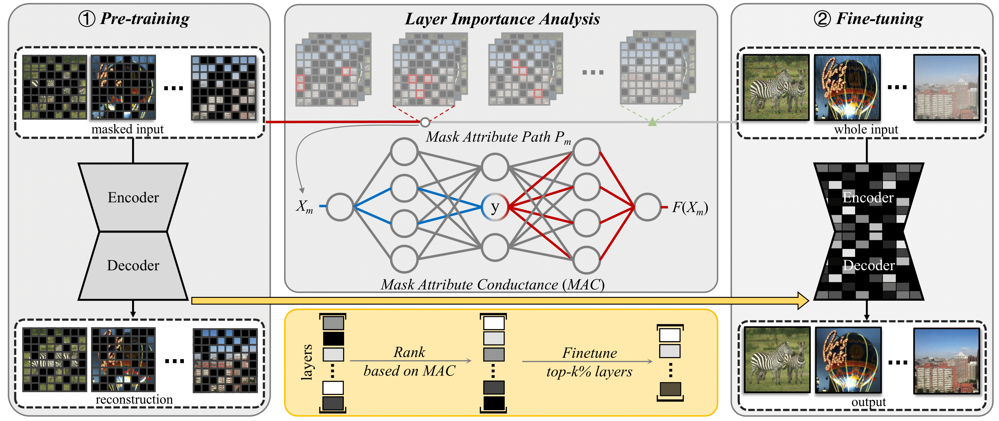
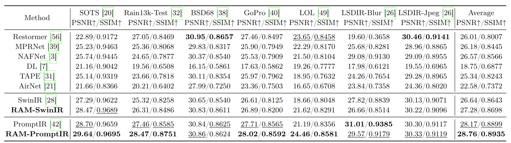
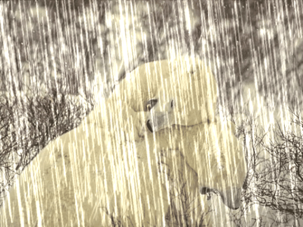
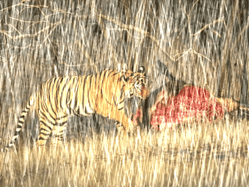
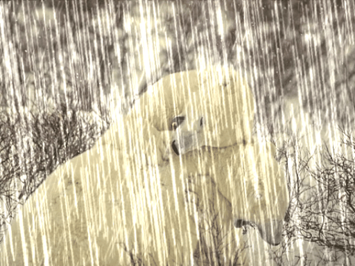
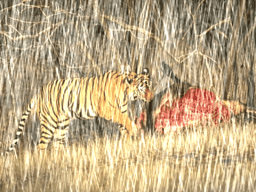
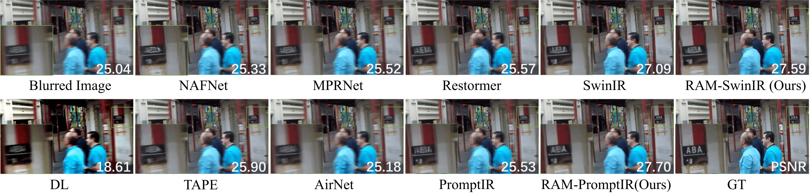
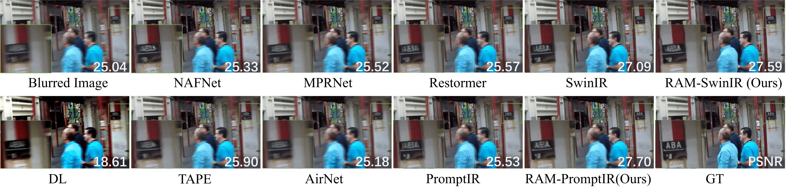

Restore Anything with Masks: Leveraging Mask Image Modeling for Blind All-in-One Image Restoration
ECCV 2024
Chu-Jie Qin1, 2
Rui-Qi Wu1, 2
Zi-Kun Liu3
Xin Lin4
Chun-Le Guo1, 2
Hyun Hee Park5
Chong-Yi Li1, 2*
1VCIP, CS, Nankai University
2NKIARI, Shenzhen Futian
3Samsung Research, China, Beijing (SRC-B)
4The Department of Camera Innovation Group, Samsung Electronics
5Sichuan University
Abstract
All-in-one image restoration aims to handle multiple degradation types using one model. We propose a simple pipeline for all-in-one blind image restoration to Restore Anything with Masks (RAM). We focus on the image content itself by utilizing the MIM to extract intrinsic image information rather than distinguishing degradation types like other methods. Our pipeline consists of two stages: masked image pre-training and fine-tuning with mask attribute conductance. We design a simple masking pre-training approach tailored to all-in-one image restoration, boosting networks to focus more on extracting image content priors from any degradation, which turns out to be a more balanced (between different restoration tasks) and stronger performance. To bridge the gap of input integrity while preserving learned image priors as much as possible, we selectively fine-tuned a small portion of the layers. Specifically, the importance of each layer is ranked by the proposed Mask Attribute Conductance (MAC), and the layers with higher contributions are selected for finetuning. Extensive quantitative and qualitative experiments demonstrate that our method achieves state-of-the-art performance. Our code and model will be released.
Method

The illumination of our overall pipeline. 1) Pre-training the model with mask image pre-training method tailored to low-level vision. We randomly mask degraded images at the pixel level with a 50% masking ratio and reconstruct the clean images. 2) The Fine-tuning stage is followed to overcome the input integrity gap caused by changing masked input during pre-training into the whole image during inference.
We analyze the importance of each network layer for resolving the input integrity gap according to the proposed MAC and rank them in descending order. The top k% of network layers are selected for fine-tuning on the complete image.
Quantitative Comparisons

Quantitative comparison on seven challenging image restoration tasks,
including dehazing, deraining, denoising, motion deblurring,
low-light image enhancement (LLIE), kernel deblurring, and JPEG artifact removal.
Boldface and underlined indicate the best and second-best results, respectively.
 





 
